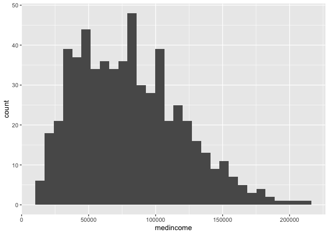
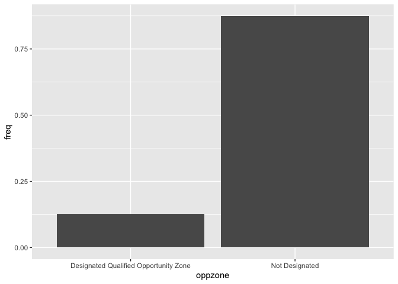
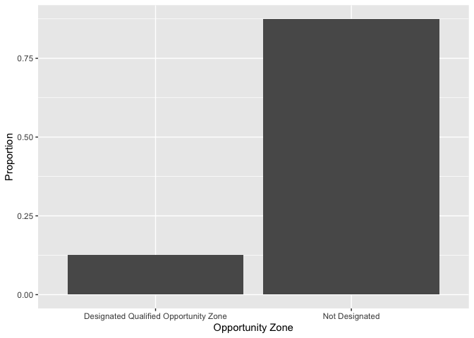
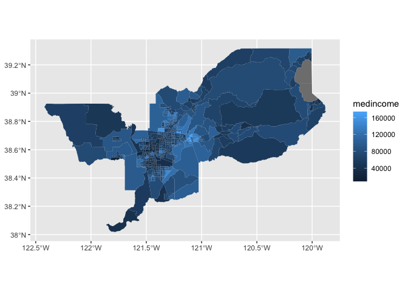
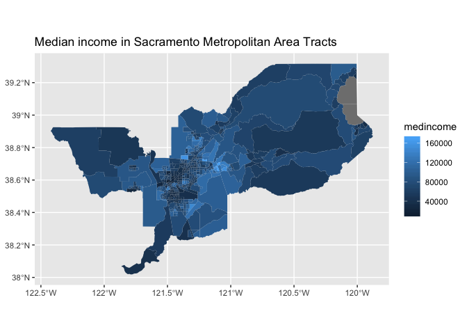
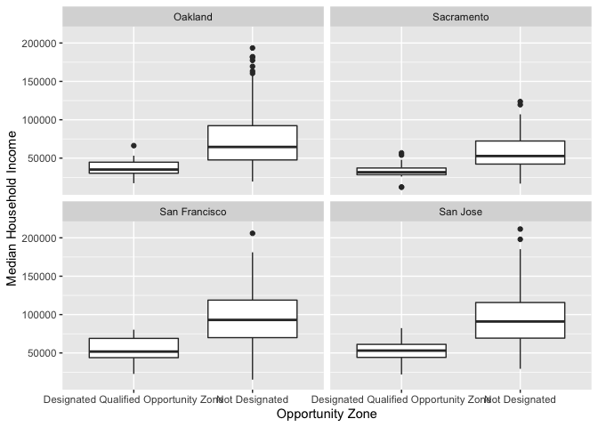
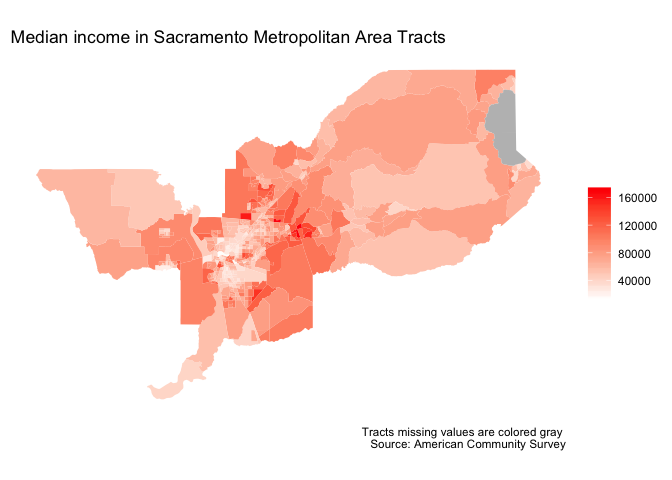
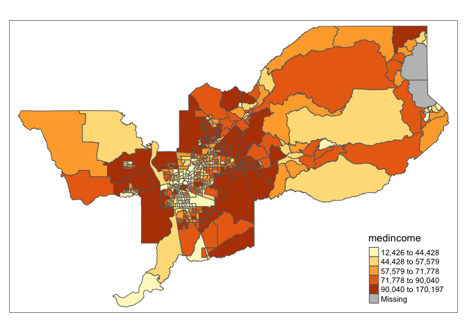

Lab 4: Exploratory Data Analysis
CRD 150 - Quantitative Methods in Community Research
Professor Noli Brazil
January 28, 2021
The goal of this lab is to acquire skills in running descriptive statistics and creating graphs using R. Make sure you’ve read and fully understood Handout 4 as this guide tracks closely with the material presented there. In this lab, we will be working with census tract data from PolicyMap. As described in Handout 3, census tracts are the traditional measure of neighborhoods in the United States. The objectives of the guide are as follows
- Learn how to use various R functions to summarize neighborhood characteristics
- Introduction to R graphics
This lab guide follows closely and supplements the material presented in Chapters 1,3, 5 and 22 in the textbook R for Data Science (RDS) and the class Handout 4.
Assignment 4 is due by 12:00 pm, February 4th on Canvas. See here for assignment guidelines. You must submit an .Rmd file and its associated .html file. Name the files: yourLastName_firstInitial_asgn04. For example: brazil_n_asgn04.
Open up a R Markdown file
Download the Lab template into an appropriate folder on your hard drive (preferably, a folder named ‘Lab 4’), open it in R Studio, and type and run your code there. The template is also located on Canvas under Files. Change the title (“Lab 4”) and insert your name and date. Don’t change anything else inside the YAML (the stuff at the top in between the ---). Also keep the grey chunk after the YAML. For a rundown on the use of R Markdown, see the assignment guidelines
Installing and loading packages
We won’t be installing any new packages in this lab. Load the following package using library(). Remember, you need to do this every time you run an R session, so the following code should appear at the top of your R Markdown file.
library(tidyverse)Reading in census tract data
You will be working with census tract data for the cities of Sacramento, San Francisco, San Jose, and Oakland, the four largest cities in Northern California. Let’s get some more practice working with data from PolicyMap. To save us time, I downloaded data from PolicyMap, cleaned the file, and uploaded it on GitHub. Let’s bring the csv file into R using read_csv().
ncal.tracts <- read_csv("https://raw.githubusercontent.com/crd150/data/master/pmap_lab3.csv")
glimpse(ncal.tracts)The dataset contains tract-level median household income, percent Hispanic, percent Black, whether the tract is designated as an Opportunity Zone (a high-poverty neighborhood eligible for federal economic development funding), the home mortgage loan-to-income ratio (also known as the leverage ratio), and whether the tract is “Majority” Hispanic (phisp > 50%) or “Not Majority” Hispanic. Check the PolicyMap tutorial for steps to downloading and cleaning PolicyMap data.
Summarizing a single variable
Recall from Handout 4 our two important data types: categorical and numeric. Let’s first summarize a numeric variable - neighborhood median household income - using some basic descriptive statistics.
Numeric variables
We can use the function summarize() to calculate mean neighborhood income. The first argument inside summarize() is the data object ncal.tracts and the second argument is the function calculating the specific summary statistic, in this case mean(), which unsurprisingly calculates the mean of the variable you indicate in between the parentheses.
summarize(ncal.tracts, mean(medincome))## # A tibble: 1 x 1
## `mean(medincome)`
## <dbl>
## 1 NAWe get the value NA, which as we learned in Lab 3 represents a missing value. If a variable has missing values, functions like mean() will return an NA. If we use the function summary(), we find that medincome has 8 tracts with missing median income values
summary(ncal.tracts)## fips oppzone city levratio
## Min. :6.001e+09 Length:599 Length:599 Min. :2.050
## 1st Qu.:6.067e+09 Class :character Class :character 1st Qu.:3.140
## Median :6.075e+09 Mode :character Mode :character Median :3.368
## Mean :6.063e+09 Mean :3.368
## 3rd Qu.:6.086e+09 3rd Qu.:3.570
## Max. :6.086e+09 Max. :5.460
##
## medincome phisp pblk mhisp
## Min. : 12171 Min. :0.0000 Min. :0.00000 Length:599
## 1st Qu.: 49690 1st Qu.:0.1039 1st Qu.:0.01798 Class :character
## Median : 77188 Median :0.1944 Median :0.04365 Mode :character
## Mean : 80407 Mean :0.2447 Mean :0.09279
## 3rd Qu.:104670 3rd Qu.:0.3411 3rd Qu.:0.11576
## Max. :211442 Max. :0.8172 Max. :0.63884
## NA's :8In order to calculate the mean (or any numeric descriptive statistic) for a variable with missing value, use the argument na.rm = TRUE, which will calculate the mean of the variable without the missing values.
summarize(ncal.tracts, mean(medincome, na.rm = TRUE))## # A tibble: 1 x 1
## `mean(medincome, na.rm = TRUE)`
## <dbl>
## 1 80407.Does the average neighborhood income differ by city? We need to pair summarize() with the function group_by() to answer this question. The function group_by() tells R to run subsequent functions on the data object by a group characteristic (such as gender, educational attainment, or in this case, city). Let’s use our new best friend %>%, who we met in Lab 2, to accomplish this task.
ncal.tracts %>%
group_by(city) %>%
summarize(mean(medincome, na.rm = TRUE))## # A tibble: 4 x 2
## city `mean(medincome, na.rm = TRUE)`
## <chr> <dbl>
## 1 Oakland 66559.
## 2 Sacramento 53798.
## 3 San Francisco 91052.
## 4 San Jose 91805.The first pipe sends ncal.tracts into the function group_by(), which tells R to group ncal.tracts by the variable city.
ncal.tracts %>%
group_by(city)How do you know the tibble is grouped? Because it tells you

The second pipe takes this grouped dataset and sends it into the summarize() command, which calculates the mean neighborhood income (by city, because the dataset is grouped by city).
We can calculate more than one summary statistic within summarize(). For example, to get the mean, median, standard deviation and interquartile range (IQR) of median income, and give column labels for the variables in the resulting summary table, we type in
ncal.tracts %>%
group_by(city) %>%
summarize(Mean = mean(medincome, na.rm = TRUE),
Median = median(medincome, na.rm = TRUE),
SD = sd(medincome, na.rm = TRUE),
IQR = IQR(medincome, na.rm = TRUE))## # A tibble: 4 x 5
## city Mean Median SD IQR
## <chr> <dbl> <dbl> <dbl> <dbl>
## 1 Oakland 66559. 51438. 41417. 40686.
## 2 Sacramento 53798. 49552 24415. 28390.
## 3 San Francisco 91052. 89184. 37913. 50444
## 4 San Jose 91805. 88299 34650. 48412.Remember from Handout 4 that the IQR is the difference between the 75th and 25th percentiles. It is a measure of spread, and more generally, an indicator of inequality. Another measure of spread or inequality is the 90/10 ratio. To calculate this ratio, we’ll first need to calculate the 90th and 10th percentiles using the quantile() command, where we indicate the percentile using the argument p =. We can do all of this inside summarize(). Make sure you understand what each function in the code below is doing.
ncal.tracts %>%
group_by(city) %>%
summarize(p90 = quantile(medincome, p = 0.90, na.rm = TRUE),
p10 = quantile(medincome, p = 0.10, na.rm = TRUE),
Ratio9010 = p90/p10) %>%
select(-(c(p90,p10)))## # A tibble: 4 x 2
## city Ratio9010
## <chr> <dbl>
## 1 Oakland 4.39
## 2 Sacramento 3.15
## 3 San Francisco 3.49
## 4 San Jose 2.73Categorical variables
Let’s next summarize a single categorical variable. oppzone indicates whether a tract is designated as an Opportunity Zone neighborhood. The variable has two categories: designated and not designated as an Opportunity Zone.
To get the percent of tracts that are Opportunity Zone neighborhoods, you’ll need to combine the functions group_by(), summarize() and mutate() using %>%.
ncal.tracts %>%
group_by(oppzone) %>%
summarize(n = n()) %>%
mutate(freq = n / sum(n))## # A tibble: 2 x 3
## oppzone n freq
## <chr> <int> <dbl>
## 1 Designated Qualified Opportunity Zone 75 0.125
## 2 Not Designated 524 0.875Let’s break up this chunk of code to show exactly what was done here. First, ncal.tracts was piped into the group_by() function. Next, group_by(oppzone) separates the neighborhoods by Opportunity Zone designation. We then used summarize() to count the number of neighborhoods by Opportunity Zone designation. The function to get a count is n(), and we saved this count in a variable named n. This gave us the following table.
ncal.tracts %>%
group_by(oppzone) %>%
summarize (n = n())## # A tibble: 2 x 2
## oppzone n
## <chr> <int>
## 1 Designated Qualified Opportunity Zone 75
## 2 Not Designated 524There are 75 neighborhoods that are designated as an Opportunity Zone. Next, this table is piped into mutate(), which creates a variable showing the proportion of all neighborhoods by Opportunity Zone designation. The code sum(n) adds the values of n: 524+75 = 599. We then divide the value of each n by this sum: 75/599 = 0.125 and 524/599 = 0.875. That yields the final frequency table.
ncal.tracts %>%
group_by(oppzone) %>%
summarize (n = n()) %>%
mutate(freq = n / sum(n))## # A tibble: 2 x 3
## oppzone n freq
## <chr> <int> <dbl>
## 1 Designated Qualified Opportunity Zone 75 0.125
## 2 Not Designated 524 0.875We can add city to the group_by() function to disaggregate the above result by city.
ncal.tracts %>%
group_by(city, oppzone) %>%
summarize (n = n()) %>%
mutate(freq = n / sum(n))## # A tibble: 8 x 4
## # Groups: city [4]
## city oppzone n freq
## <chr> <chr> <int> <dbl>
## 1 Oakland Designated Qualified Opportunity Zone 30 0.265
## 2 Oakland Not Designated 83 0.735
## 3 Sacramento Designated Qualified Opportunity Zone 23 0.23
## 4 Sacramento Not Designated 77 0.77
## 5 San Francisco Designated Qualified Opportunity Zone 11 0.0558
## 6 San Francisco Not Designated 186 0.944
## 7 San Jose Designated Qualified Opportunity Zone 11 0.0582
## 8 San Jose Not Designated 178 0.942Which city has the highest proportion of Opportunity Zone neighborhoods? Lowest?
Summarizing two variables
The functions we’ve gone through so far describe one variable. It is often the case that we are interested in understanding whether two variables are associated with one another.
Let’s go through the ways we can describe the association between: (1) two categorical variables; (2) one categorical variable and one numeric variable; and (3) two numeric variables.
Two categorical variables
To summarize the relationship between two categorical variables, you’ll need to find the proportion of observations for each combination, also known as a cross tabulation. Let’s create a cross tabulation of the categorical variables oppzone and mhisp. We do this by using both variables in the group_by() command.
ncal.tracts %>%
group_by(oppzone, mhisp) %>%
summarize(n = n()) %>%
mutate(freq = n / sum(n))## # A tibble: 4 x 4
## # Groups: oppzone [2]
## oppzone mhisp n freq
## <chr> <chr> <int> <dbl>
## 1 Designated Qualified Opportunity Zone Majority 16 0.213
## 2 Designated Qualified Opportunity Zone Not Majority 59 0.787
## 3 Not Designated Majority 47 0.0897
## 4 Not Designated Not Majority 477 0.910A much higher proportion of Opportunity Zone neighborhoods are Majority Hispanic (0.213) compared to non Opportunity Zone neighborhoods (0.0897).
One categorical, one numeric
A typical way of summarizing the relationship between a categorical variable and a numeric variable is to take the mean of the numeric variable for each level of the categorical variable. We can get the mean median household income for neighborhoods designated and not designated as an Opportunity Zone using the following code.
ncal.tracts %>%
group_by(oppzone) %>%
summarize("Mean Income" = mean(medincome, na.rm = TRUE))## # A tibble: 2 x 2
## oppzone `Mean Income`
## <chr> <dbl>
## 1 Designated Qualified Opportunity Zone 40694.
## 2 Not Designated 86003.Let’s separate by city by adding city to the group_by() function.
ncal.tracts %>%
group_by(city, oppzone) %>%
summarize("Mean Income" = mean(medincome, na.rm = TRUE))## # A tibble: 8 x 3
## # Groups: city [4]
## city oppzone `Mean Income`
## <chr> <chr> <dbl>
## 1 Oakland Designated Qualified Opportunity Zone 36980.
## 2 Oakland Not Designated 77380.
## 3 Sacramento Designated Qualified Opportunity Zone 33468.
## 4 Sacramento Not Designated 59606.
## 5 San Francisco Designated Qualified Opportunity Zone 53810
## 6 San Francisco Not Designated 93291.
## 7 San Jose Designated Qualified Opportunity Zone 53305.
## 8 San Jose Not Designated 93993.Two numeric variables
You can summarize the relationship between two numeric variables with the correlation coefficient. To calculate the correlation coefficient, use the function cor(). The first two arguments in cor() are the two numeric variables you want to calculate the correlation for. Let’s calculate the correlation between neighborhood income and percent race, and neighborhood loan-to-income ratio and percent black. Note that the argument use = "complete.obs" removes the missing values in medincome.
ncal.tracts %>%
group_by(city) %>%
summarize(blk_inc = cor(medincome,pblk, use = "complete.obs"))## # A tibble: 4 x 2
## city blk_inc
## <chr> <dbl>
## 1 Oakland -0.487
## 2 Sacramento -0.490
## 3 San Francisco -0.340
## 4 San Jose -0.236Group these correlations by city.
ncal.tracts %>%
group_by(city) %>%
summarize(blk_inc = cor(medincome,pblk, use = "complete.obs"))## # A tibble: 4 x 2
## city blk_inc
## <chr> <dbl>
## 1 Oakland -0.487
## 2 Sacramento -0.490
## 3 San Francisco -0.340
## 4 San Jose -0.236Summarizing variables using graphs
Another way of summarizing variables and their relationships is through graphs and charts. The main package for R graphing is ggplot2 which is a part of the tidyverse package. The graphing function is ggplot() and it takes on the basic template
ggplot(data = <DATA>) +
<GEOM_FUNCTION>(mapping = aes(x, y)) +
<OPTIONS>()ggplot()is the base function where you specify your dataset using thedata = <DATA>argument.You then need to build on this base by using the plus operator
+and<GEOM_FUNCTION>()where<GEOM_FUNCTION>()is a unique function indicating the type of graph you want to plot. Each unique function has its unique set of mapping arguments which you specify using themapping = aes()argument. Charts and graphs have an x-axis, y-axis, or both. Check this ggplot cheat sheet for all possible geoms.<OPTIONS>()are a set of functions you can specify to change the look of the graph, for example relabelling the axes or adding a title.
Before we go through how to create the graphs described in Handout 4, let’s first get a quick sense of how ggplot() works. Below is code that creates a histogram
ggplot(ncal.tracts) +
geom_histogram(mapping = aes(x=medincome))
ncal.tracts is <DATA>, geom_histogram() is the <GEOM_FUNCTION>(), and x=medincome is the variable in ncal.tracts we are graphing. We don’t specify a y = because a histogram is a one variable plot.
Bar charts
Recall from Handout 4 that we use bar charts to summarize categorical variables. Bar charts show either the number or frequency of each category. To create a bar chart, use geom_bar() for <GEOM_FUNCTION>(). Let’s show a bar chart of oppzone. We can borrow from the code we used earlier to create our oppzone frequency table and pipe this table directly into ggplot().
ncal.tracts %>%
group_by(oppzone) %>%
summarize (n = n()) %>%
mutate(freq = n / sum(n)) %>%
ggplot() +
geom_bar(mapping=aes(x=oppzone, y=freq),stat="identity") 
We didn’t need to specify data = <DATA> in ggplot() because it was piped in. Within aes(), we specified the categorical variable oppzone on the x-axis and then the proportion of neighborhoods freq on the y-axis. The argument stat = "identity" tells ggplot() to plot the exact value listed for the variable freq.
The X and Y axes labels are not so great. Interpretable labels are important for getting your message across clearly. We can relabel the axes using the xlab() and ylab() functions, which are examples of <OPTIONS>() functions.
ncal.tracts %>%
group_by(oppzone) %>%
summarize (n = n()) %>%
mutate(freq = n / sum(n)) %>%
ggplot() +
geom_bar(mapping=aes(x=oppzone, y=freq),stat="identity") +
xlab("Opportunity Zone") +
ylab("Proportion")
Histograms
Histograms are used to summarize a single numeric variable. To create a histogram, use geom_histogram() for <GEOM_FUNCTION()>. Let’s create a histogram of median household income.
ggplot(ncal.tracts) +
geom_histogram(mapping = aes(x=medincome)) +
xlab("Median Household Income") ## `stat_bin()` using `bins = 30`. Pick better value with `binwidth`.## Warning: Removed 8 rows containing non-finite values (stat_bin).
As described earlier, because a single variable is plotted on the x-axis, we specify x = in aes() but not a y =. The message before the plot tells us that we can use the bins = argument to change the number of bins used to produce the histogram. You can increase the number of bins to make the bins narrower and thus get a finer grain of detail. Or you can decrease the number of bins to get a broader visual summary of the shape of the variable’s distribution. Try changing the number of bins and see what you get.
Boxplots
We can use a boxplot to visually summarize the distribution of a single variable or the relationship between a categorical and numeric variable. Use geom_boxplot() for <GEOM_FUNCTION()> to create a boxplot. Let’s examine median household income.
ggplot(ncal.tracts) +
geom_boxplot(mapping = aes(y = medincome))+
ylab("Median Household Income") 
Remember from Handout 4 that the points outside the whiskers represent outliers. Outliers are defined as having values that are either larger than the 75th percentile plus 1.5 times the IQR or smaller than the 25th percentile minus 1.5 times the IQR. The IQR is $55,103, the 75th percentile is $104,670 and the 25th percentile is $49,568. While we don’t see outliers at the bottom, we do see outliers at the top - these are neighborhoods with median income values greater than $104,670 + 1.5*$55,103 = $187,324.5
Let’s examine the distribution of median income by Opportunity Zone. Because we are examining the association between two variables, we need to specify x and y variables.
ggplot(ncal.tracts) +
geom_boxplot(mapping = aes(x = oppzone, y = medincome)) +
xlab("Opportunity Zone") +
ylab("Median Household Income") 
The boxplot is for all neighborhoods combined. We can use the facet_wrap()function to separate by city
ggplot(ncal.tracts) +
geom_boxplot(mapping = aes(x = oppzone, y = medincome)) +
xlab("Opportunity Zone") +
ylab("Median Household Income") +
facet_wrap(~city) 
Note the tilde operator ~ before city.
The labels for oppzone is really long. We can change the label names (as an exercise, try this on your own) or we can create horizontal boxplots. To create horizontal boxplots, add the coord_flip() function at the end. Let’s also change the axes labels to make them more descriptive.
ggplot(ncal.tracts) +
geom_boxplot(mapping = aes(x = oppzone, y = medincome)) +
facet_wrap(~city) +
ylab("Median Household Income") +
xlab("Opportunity Zone") +
coord_flip()
Scatterplots
The scatterplot is the traditional graph for visualizing the association between two numeric variables. For scatterplots, we use geom_point() for <GEOM_FUNCTION>(). Because we are plotting two variables, we specify an x and y variable. Does median household income change with greater percent Hispanic in the neighborhood?
ggplot(ncal.tracts) +
geom_point(mapping = aes(x = phisp, y = medincome)) +
xlab("Percent Hispanic") +
ylab("Median Household Income")
And for each city?
ggplot(ncal.tracts) +
geom_point(mapping = aes(x = phisp, y = medincome)) +
xlab("Percent Hispanic") +
ylab("Median Household Income") +
facet_wrap(~city) What do these scatter plots suggest about the relationship between income and percent Hispanic across these four cities?
ggplot() is a powerful function, and you can make a lot of visually captivating graphs. You can also make maps with the function, which we’ll cover in next week’s lab when we introduce spatial data. We have just scratched the surface of its functions and features. The list of all possible plots for <GEOM_FUNCTION>() can be found here. You can also make your graphs really “pretty” and professional looking by altering graphing features using <OPTIONS(), including colors, labels, titles and axes. For a list of options that alter various features of a graph, check out Chapter 22 in RDS.
Here’s your ggplot2 badge. Wear it with pride!

Saving plots
You will, on occasion, need to save a plot to a specific file. Don’t use the built-in “Export” button! If you do, your figure is not reproducible – no one will know how your plot was exported. Instead, use ggsave() by explicitly creating the figure and exporting
Let’s save the scatterplot of percent Hispanic and median household income as a .png file named “phisp_inc.png”. First, we save the plot produced by ggplot() into an R object named phisp_inc
phisp_inc <- ggplot(ncal.tracts) +
geom_point(mapping = aes(x = phisp, y = medincome)) +
xlab("Percent Hispanic") +
ylab("Median Household Income")We then save phisp_inc using ggsave()
ggsave("phisp_inc.png", phisp_inc)Navigate to your working directory folder (type in getwd() to find what this folder is) and you should see phisp_inc.png.

This work is licensed under a Creative Commons Attribution-NonCommercial 4.0 International License.
Website created and maintained by Noli Brazil